瓦罗兰大陆
瓦罗兰大陆居于符文之地中心，是符文之地面积最大的大陆。

以绪塔尔以精通元素魔法而闻名，也是第一批加入恕瑞玛帝国的独立国家之一。实际上，以绪塔利文化发源极早，属于西部大迁徙的一部分，并孕育了后世的许多文明，包括芭茹、壮丽的海力亚、苦行的巨神峰族人。并且他们也有可能在第一个飞升者诞生的过程中扮演了重要的角色。
巨神峰是符文大陆的世界之巅，这座高耸入云的山峰完全由坚硬的山石构成，终年沐浴着烈日阳光，永远俯视着脚下的群山，恢弘磅礴举世无双。巨神峰坐落于远离文明的无人之地，对于许多人都是遥不可及的，只有那些意志最坚决的追寻者有幸一睹尊容。许多传奇故事都与巨神峰有关，并且，和其他神秘地区一样，巨神峰也是一座吸引着梦想家、疯人和冒险者的璀璨信标。

弗雷尔卓德是一片环境恶劣、严酷无情的土地。这里的人们全都充满自豪并极具独立意识。他们个个都是天生的武士，强盗文化源远流长。虽然弗雷尔卓德境内存在着许多不同的部族，但他们之间的纷争被划分为三个阵营，而这场内战的结果将决定所有部族的未来。

德玛西亚是一个实力雄厚、奉公守法的国家，有着功勋卓著的光荣军史。这里非常重视正义、荣耀、职责的意识形态，这里的人民为此感到强烈自豪。德玛西亚是一个自给自足的农耕社会，肥沃的耕地、大片未砍伐的森林、以及矿产储量丰富的山脉遍及全境
恕瑞玛之前是符文之地上的一个伟大国家，拥有强大的文明、军事、人文和科技，从各个角度影响着符文之地。不过在阿兹尔的飞升仪式遭到破坏以后，如今的恕瑞玛已经变成一片废墟，曾经的远古恕瑞玛文明也成为了一个传说。
“现在被称为暗影岛的这片土地曾经是环境优美的岛屿，但却因一场魔法灾难的毁灭打击而彻底改头换面。现在，黑雾无时无刻萦绕着这块岛屿，土地本身也遭到邪术的污染和腐化。任何活物如果来到岛上，生命力都会渐渐流逝，继而引来永不知足、猎食成性的死灵。

比尔吉沃特是走私贩、劫掠者和不义之徒的避难港湾。在这里，富可敌国或是家破人亡都只在转瞬之间。对于那些逃避审判、债务和迫害的人，这个城市能让他们重获新生，因为在比尔吉沃特的蜿蜒街路上，没人会在乎你的过去。这里是不同文化、种族、和信仰的大熔炉，无时不在蠢蠢欲动。
这里日光溶溶，春水不休，每一株植物都会结出累累硕果。奔放的魔法洋溢蓬勃，一不小心就会堕入无数种怪象奇景中无法自拔，最后死于饥饿和干渴。所有自称到过班德尔城的人都会提到这里具有某种超脱时间的属性，这或许可以解释为什么这些故事传说的叙述者衰老的速度奇快，有的甚至从未回来过。
皮尔特沃夫是瓦洛兰大陆的文化中心，艺术、工艺、贸易与创新携手并进。其位于瓦罗兰大陆北方，以首屈一指的魔法与科技能力为傲的魔法科技都市。英雄联盟里许多强力的道具皆生产于此地。规模不大的皮尔特沃夫通过与英雄联盟的合作，成功的在瓦罗兰大陆上占有一席之地。
祖安是位于瓦罗然北方被滥用的魔法和科技所扭曲的城邦。无数声名狼藉的恐怖科技和魔法创造发明于此。祖安看上去和一般的城市大相径庭。城市随时被一层污染物笼罩，天空从灰到绿异常的变化。祖安的居民通常都戴有口罩，防止吸入过多的污染物。

艾欧尼亚的土地上充盈着未遭破坏的自然之美和原生魔法。这座庞大的岛屿上四散着人类的定居点，这是一群充满灵性的人，追求着平静和谐、与世无争的生活。艾欧尼亚境内存在许多教派和社团，每一派都遵循各自（常常是彼此冲突的）的教义与理念。
诺克萨斯是一个威名震天的强大帝国。在诺克萨斯境外的人眼中，它拥兵自重、血腥野蛮、欲壑难填，但对于那些看透它好战外表的人来说，这里的社会氛围实际上超乎寻常地包容。人民的所有特长和天赋都会得到尊重和受到培养的机会。诺克萨斯人曾经是一群残暴的掠夺者，他们占领了一座古城，并将其建成了现在的帝国中心。
主要英雄介绍
大家一起来看看来自瓦罗兰大陆各个城邦的一些英雄吧
-
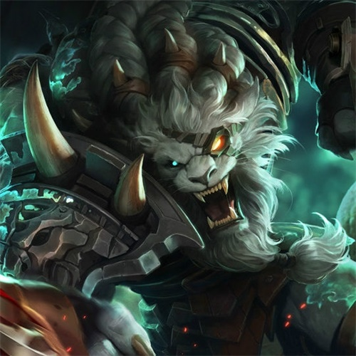
- 傲之追猎者·雷恩加尔
- 瓦斯塔亚的雷恩加尔是一名声名远扬又凶残无比的猎手。他的人生充满着追寻猎杀危险的生物的快感。他寻遍整个世界，只为寻找他能找到的最可怕的野兽，特别是寻找任何关于卡兹克的踪迹。这头来自虚空的野兽弄瞎了他的一只眼睛。雷恩加尔追寻着猎物，不为捕食也不为荣耀，只是为了纯粹的猎杀所带来的激烈美感。
- “今晚，猎个痛快”
-

- 暮光星灵·佐伊
- 调皮捣蛋、异想天开而且变化莫测，佐伊就是这一切的现实化身。作为巨神族的宇宙信使，她的出现就是惊天巨变的先兆。她甚至无需任何行为，只是单纯地出现在某个地方，就足以扭曲周围的奥术数学法则，从而扰乱现实的物理定律。有的时候还会带来浩劫与灾难，虽然她本身并无半点恶意。
- “嘿！我可能喜欢上了你”
-
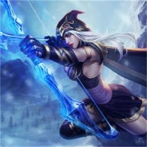
- 寒冰射手·艾希
- 作为阿瓦罗萨部族的战母，寒冰血脉的艾希率领着北方人数最多的部落。她克己、智慧、忠于理想，但并不适应自己作为领袖的角色，艾希与自己血脉中蕴藏的先祖魔法相通，挽起了臻冰打造的长弓。
- “一个部族，一个民族，一个弗雷尔卓德。”
-
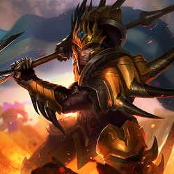
- 德玛西亚皇子·嘉文四世
- 皇子嘉文四世是皇家的血脉，意味着他便是德玛西亚的下一任国王。他自小被寄予厚望，有朝一日能够成为德玛西亚的楷模，而如此沉重的负担令他的心中充满了挣扎。在战场上，他英勇无畏的气势和一往无前的决心鼓舞着全军上下，显现出身为人主的真实才干。
- “我们的使命就是力战而亡”
-
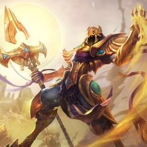
- 沙漠皇帝·阿兹尔
- 阿兹尔是上古时期恕瑞玛的一位凡人皇帝，一位站在不朽神话巅峰的自豪之人。但他的狂妄引来了旁人的背叛，在最伟大胜利降临的那一刻将他杀害。而现在，数千年后，他重获新生并成为了力量无边的飞升者。阿兹尔的城市已经从黄沙之下崛起，他要让恕瑞玛恢复曾经的荣光。
- “恕瑞玛，你的皇帝回来了”
-
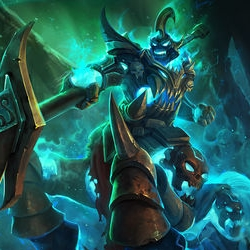
- 战争之影·赫卡里姆
- 赫卡里姆是人与兽的幽灵混合体，身上的诅咒让他永世都只能不停地蹂躏践踏生者的灵魂。在福光岛被暗影吞噬之际，这位自豪的骑士被破败之咒的毁灭能量彻底湮没，连同他的骑兵团和他们胯下的坐骑。现在，符文之地上只要有黑雾出现的地方，就会有他率军冲锋的鬼影，在屠杀中狂欢，用铁蹄摧残脚下的敌人。
- “暗影正在逼近”
-
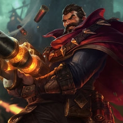
- 法外狂徒·格雷福斯
- 马尔科姆·格雷福斯是有名的佣兵、赌徒和窃贼，凡是他到过的城邦或帝国，都在通缉悬赏他的人头。虽然他脾气暴躁，但却非常讲究黑道的义气，他的双管散弹枪“命运”就经常用来纠正背信弃义之事
- “追求刺激，死亡就会在不经意间追上你”
-
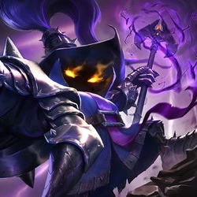
- 邪恶小法师·维迦
- 维迦是热衷于魔法的约德尔巫师。几乎没有哪个凡人敢碰的恐怖力量，他却能敞开怀抱。作为拥有自由精神的班德尔城居民，他曾渴求凡人所使用的天界魔法，但在不朽堡垒渡过的囚禁生活扭曲了他的天生好奇心。
- “我能看见你内心的恐惧”
-
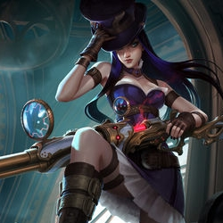
- 皮城女警·凯特琳
- 凯特琳被誉为皮尔特沃夫最顶尖的和平卫士，同时也是让这座城市真正摆脱地下隐秘犯罪的最有希望的人选。她经常和蔚联手执行任务，以冷静和沉着弥补自己搭档的鲁莽天性。
- “坏人总是太多，时间却又太少”
-
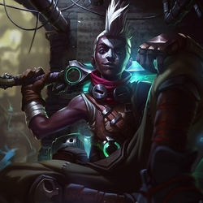
- 时间刺客·艾克
- 艾克是一名来自祖安不良街区的奇才。他可以操纵时间，从而让任何处境都变得对自己有利。通过使用他自己的发明——Z型驱动——他可以对现实的其它分支的可能性进行探索。
- “我宁愿犯错，也不愿什么都不做”
-
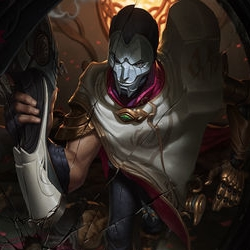
- 戏命师·烬
- 作为一名心思缜密的癫狂杀手，烬坚信谋杀是一门艺术。他曾在艾欧尼亚的监狱中服刑，但却因为执政议会里涌动着的暗流而得到释放，成为了权术斗争所利用的刺客。
- “我于杀戮之中盛放，亦如黎明中的花朵”
-
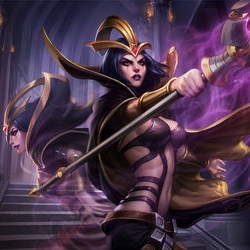
- 诡术妖姬·乐芙兰
- 即使是在秘密团体黑色玫瑰的成员内部，乐芙兰也同样保持神秘，而乐芙兰这个名字也只是众多化名之一。这个皮肤惨白的女人自从诺克萨斯建国初期就开始操纵大小人物，推动事态发展。
- “黑玫瑰将会再次绽放”
召唤师技能
游戏中召唤师技能的选择至关重要

4级后使用
为你的英雄套上护盾，吸收115-455（取决于英雄等级）点伤害，持续2秒。
冷却时间180秒

6级后使用
移除身上的所有限制效果和召唤师技能的减益效果，并且若在接下来的3秒里再次被施加限制效果时，新效果的持续时间会减少65%。
冷却时间210秒

4级后使用
虚弱目标敌方英雄，降低目标英雄30%的移动速度和攻击速度，以及10护甲与魔法抗性，并且他们所造成的伤害减少40%，持续2.5秒。
冷却时间210秒
8级后使用
使英雄朝着你的指针所停的区域瞬间传送一小段距离。
冷却时间300秒

1级后使用
你的英雄在移动时无视单位的碰撞体积，移动速度增加28-45%（于1-18级），持续10秒。
冷却时间180秒

1级后使用
为你和目标友军英雄回复95-345（取决于英雄等级）生命值，并为你和目标友军英雄提供30%移动速度加成，持续1秒。若目标近期已受到过其它治疗术的影响，则治疗术对目标产生的治疗效果减半。
冷却时间240秒

10级后使用
引燃是对单体敌方目标施放的持续性伤害技能，在5秒的持续时间里造成80-505（于1-18级）真实伤害，获得目标的视野，并减少目标所受的治疗和回复效果。
冷却时间180秒

1级后使用
为你的英雄回复50%的最大法力值，也会为周围的友军回复25%的最大法力值。
冷却时间144秒

10级后使用
对目标史诗野怪、大型野怪或敌方小兵造成390-1000（取决于英雄等级）点真实伤害。
冷却时间15秒

6级后使用
在引导4.5秒后，将英雄传送到友方建筑物、小兵或守卫旁边。
冷却时间360秒
游戏地图
英雄联盟主要有三张地图，各有风采
召唤师峡谷位于弗雷尔卓德和一座偏僻的森林之间。召唤师峡谷是瓦罗兰大陆上一个为数不多的，到处充斥着魔法力量的地方，使之成为一个受追求魔法者欢迎的地方。这里的魔法能量是如此的大，改变了这里的生物。这里生存着巨大的青蛙，双头狼，变色龙，有角的兔子和蝴蝶。这个地方也吸引了龙。而纳什男爵也再度出现，这是一条巨大的蛇形生物，很多人认为它已经死了几个世纪，它污染着周围的土地。 在符文大陆期间，许多的符文之战发生在召唤师峡谷。
嚎哭深渊是一个无底裂隙，位于弗雷尔卓德最为寒冷、最为残酷的部分。传说在很久以前，一场宏大的战役就发生在横跨这道天堑的一座狭窄桥梁上。没有人记得谁在此战斗，为何而战斗，但有传言说，如果你仔细聆听风声的话，仍然可以看见那些葬身于深渊之中的败亡者们在嚎哭不停。
扭曲丛林位于铁脊山脉以北的一片茂密的森林，位于祖安城邦和另一个主关口之间（这个关口将诺克萨斯和瓦罗兰北部海滩连接起来）。扭曲丛林是祖安附近仅有几处未被砍伐的森林，或许这个竞技场的地形可以解释原因。魔法滥用——主要来自祖安，当然也包括符文之战无数次战斗）——扭曲了森林翠绿的生态环境，将其变成一片奇异的异域景象。扭曲丛林里的两座水晶枢纽更多的要维持该地区物理环境的稳定性。